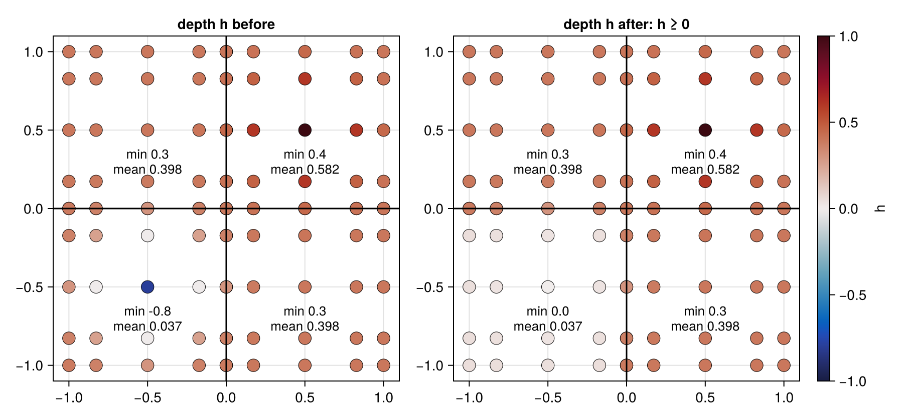

Limit tracers
Spectral-element transport overshoots: a tracer bounded between 0 and 1 develops values outside that range where the flow is under-resolved. ClimaCore.Limiters provides a horizontal quasi-monotone limiter that restores element-local bounds while conserving mass, a vertical mass borrowing limiter that removes negative values, and a Zhang–Shu positivity limiter for the conserved state of a DG discretization. All are applied to the state after a time step or stage.
Quasi-monotone limiter (horizontal)
The limiter of [14] solves, in each element, the constrained least-squares problem of finding the field closest to the transported one that lies within bounds set by the neighboring elements' values, keeping the element's tracer mass.
Create the limiter once for a tracer density field (a scalar or a
NamedTupleof tracers), and keep it in the model's cache:limiter = Limiters.QuasiMonotoneLimiter(ρq)Before the transport step, compute the bounds from the state the step starts from. In a multi-stage scheme, this is the stage's starting state:
Limiters.compute_bounds!(limiter, y.ρq, y.ρ)After the step (or stage), apply the limiter to the transported tracer density, with the transported density as the weight:
Limiters.apply_limiter!(y_new.ρq, y_new.ρ, limiter)
On a distributed topology, compute_bounds! exchanges neighbor bounds across process boundaries. examples/plane/limiters_advection.jl, examples/sphere/limiters_advection.jl, and examples/hybrid/sphere/deformation_flow.jl run the standard advection tests with and without the limiter; the Example gallery states their equations.
Vertical mass borrowing limiter
Limiters.VerticalMassBorrowingLimiter(q_min) fills a negative tracer mass at one level by borrowing from the level below, and continues downward (and, if the bottom goes negative, back up) until every level satisfies the given minimum, conserving the column's tracer mass [15]:
limiter = Limiters.VerticalMassBorrowingLimiter((0.0, 0.0)) # one minimum per tracer
Limiters.apply_limiter!(q, ρ, limiter)Zhang–Shu positivity limiter (DG)
Limiters.PositivityLimiter restores physical floors on a conserved DG state with the two-step linear scaling of [16]. In each element, each field with a linear floor is first scaled toward its own element mean by the largest θ₁ ∈ [0, 1] that keeps its nodal minimum at the floor; fields without a floor are left alone. Then, if a concave nonlinear constraint g(U) ≥ g_min is given (e.g. the pressure), the whole conserved vector is scaled toward the mean by the largest common θ₂ ∈ [0, 1] that satisfies it at every node. Both steps preserve every element mean exactly. Apply it after each stage of an SSP time step:
limiter = Limiters.PositivityLimiter(FT; floors, g, g_min)
Limiters.apply_limiter!(states, aux, limiter)states is a NamedTuple of conserved scalar fields (or fields of NamedTuples of scalars). floors is a NamedTuple keyed by a subset of the state names; a listed field is kept at or above its floor (componentwise for a NamedTuple-valued field, e.g. one density per microphysics variable), and an unlisted one is scaled but unconstrained. g(U, aux) receives one node's state as a NamedTuple with the same keys, plus the unscaled auxiliary field value aux; g and aux may be nothing.
The limiter only redistributes values within an element, so its guarantees are limited:
- The floors are restored only if every element mean is admissible. An element whose mean is below a floor is set to its mean (
θ = 0) and stays below it. The SSP time step under the CFL condition of [16] is what keeps the means admissible. - The floors hold at the nodes. The interpolating polynomial may still dip below them between nodes.
For the shallow-water equations only the depth floor is needed, so only the depth is modified; without a g the momentum is never touched. Below, a depth field on a 2×2 element grid dips below zero in one element (e.g. near a wetting–drying front):
import ClimaComms
ClimaComms.@import_required_backends
import ClimaCore:
Domains, Fields, Geometry, Limiters, Meshes, Quadratures, Spaces, Topologies
using CairoMakie
domain = Domains.RectangleDomain(
Geometry.XPoint(-1.0) .. Geometry.XPoint(1.0),
Geometry.YPoint(-1.0) .. Geometry.YPoint(1.0);
x1periodic = true,
x2periodic = true,
)
mesh = Meshes.RectilinearMesh(domain, 2, 2)
topology = Topologies.Topology2D(ClimaComms.SingletonCommsContext(), mesh)
space = Spaces.SpectralElementSpace2D(topology, Quadratures.GLL{5}())
coords = Fields.coordinate_field(space)
bump(c, x0, y0) = exp(-((c.x - x0)^2 + (c.y - y0)^2) / 0.1)
h = @. 0.4 + 0.6 * bump(coords, 0.5, 0.5) - 1.2 * bump(coords, -0.5, -0.5)
hu1 = zeros(space)
hu2 = zeros(space)
h_before = copy(h)
limiter = Limiters.PositivityLimiter(Float64; floors = (; h = 0))
Limiters.apply_limiter!((; h, hu1, hu2), nothing, limiter)
extrema(parent(h_before)), extrema(parent(h))((-0.7999999987633077, 0.9999999975266156), (0.0, 0.9999999975266156))Each dot in the figure below is a node; each element is labeled with its nodal minimum and its mean depth. Only the inadmissible element changes: it is pulled toward its mean until its minimum depth reaches the floor, and its mean, the element's water mass, is unchanged.
x, y = vec(parent(coords.x)), vec(parent(coords.y))
WJ = parent(Fields.local_geometry_field(space).WJ)
function plot_depth!(ax, h)
sc = scatter!(ax, x, y; color = vec(parent(h)), colormap = :balance,
colorrange = (-1, 1), markersize = 18, strokewidth = 0.5)
hlines!(ax, 0; color = :black)
vlines!(ax, 0; color = :black)
for e in axes(parent(h), 5) # one label per element
he, we = parent(h)[:, :, :, :, e], WJ[:, :, :, :, e]
xe, ye = parent(coords.x)[:, :, :, :, e], parent(coords.y)[:, :, :, :, e]
hmin, hmean =
round(minimum(he); digits = 2), round(sum(he .* we) / sum(we); digits = 3)
text!(ax, sum(xe) / length(xe), sum(ye) / length(ye) - 0.2;
text = "min $hmin\nmean $hmean", align = (:center, :center), fontsize = 13)
end
return sc
end
fig = Figure(; size = (900, 420))
plot_depth!(Axis(fig[1, 1]; title = "depth h before"), h_before)
sc = plot_depth!(Axis(fig[1, 2]; title = "depth h after: h ≥ 0"), h)
Colorbar(fig[1, 3], sc; label = "h")
fig
For compressible Euler with total energy, g is the pressure, with aux the geopotential Φ, and floors on the density and tracer. On the same space, a resting state gets a negative density and tracer at one node and a negative pressure at another:
pressure(ρ, ρe, ρu1, ρu2, ρu3, Φ) = # ideal gas, γ = 1.4
0.4 * (ρe - (ρu1^2 + ρu2^2 + ρu3^2) / 2ρ - ρ * Φ)
g(U, Φ) = pressure(U.ρ, U.ρe, U.ρu1, U.ρu2, U.ρu3, Φ)
Φ = @. 9.81 * (coords.y + 1)
ρ, ρq = fill(1.0, space), fill(1e-3, space)
ρu1, ρu2, ρu3 = zeros(space), zeros(space), zeros(space)
ρe = @. 2.5 + ρ * Φ
parent(ρ)[1, 3, 3, 1, 1] = -0.2 # element 1: ρ < 0 and ρq < 0
parent(ρq)[1, 3, 3, 1, 1] = -1e-3
parent(ρe)[1, 3, 3, 1, 2] -= 3.0 # element 2: p < 0
limiter =
Limiters.PositivityLimiter(Float64; floors = (; ρ = 1e-6, ρq = 0), g, g_min = 1e-3)
Limiters.apply_limiter!((; ρ, ρe, ρu1, ρu2, ρu3, ρq), Φ, limiter)
(;
ρ_min = minimum(ρ),
ρq_min = minimum(ρq),
p_min = minimum(pressure.(ρ, ρe, ρu1, ρu2, ρu3, Φ)),
)(ρ_min = 1.0000000000287557e-6, ρq_min = 0.0, p_min = 0.0016741898148147528)Limited vertical reconstructions
Vertical advection can be made monotone at the operator level rather than by a post-step limiter: Operators.LinVanLeerC2F (the van Leer limiter with the local-extrema constraint of [17]), Operators.TVDLimitedFluxC2F with a slope limiter (RZeroLimiter, MinModLimiter, KorenLimiter, SuperbeeLimiter, …), and the flux-corrected transport operators FCTBorisBook and FCTZalesak [18, 19] return limited face fluxes given the face velocity and the center field. Their docstrings on the finite-difference operators reference page give the stencils.